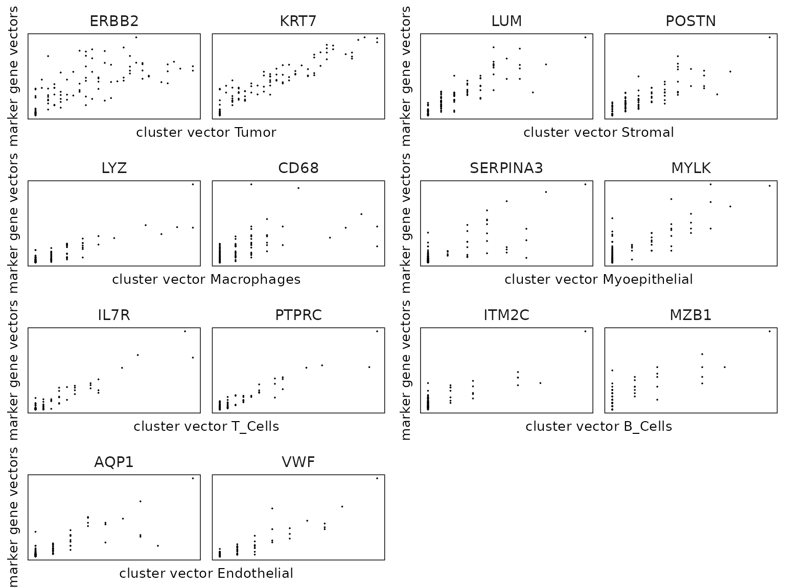

Introduction
Spatial transcriptomics allows the spatial profiling of complex tissue architectures. The spatial arrangement and interactions between cells can aid in understanding of complex functions and regulatory mechanisms in various tissue micro environments. Commercially available image-based spatial technologies such as Xenium, CosMX, and MERSCOPSE take advantage of fluorescence-based microscopy to quantify transcripts and focus on a pre-designed panel of genes.
One crucial step in the analysis of spatial transcriptomics data is cell type annotation. There are a number of ways to perform cell type annotation, and marker analysis is one of them. Marker gene analysis to identify genes highly expressed in each cluster compared to the remaining clusters. The identified marker genes are used to annotate clusters with cell types. Computationally tools originally developed for single cell data are used for spatial transcriptomics studies. However, those methods ignore the spatial information for the cells and gene. There is limited literature on developing marker gene detection methods that account for the spatial distribution of gene expression. jazzPanda provides two novel approaches to detect marker genes with transformed spatial information. Our first approach is based on correlation and the second linear modelling approach can account for technical noise and work for studies with multiple samples.
jazzPanda framework
We assume a marker gene will show a significant linear relationship with the target cluster over the tissue space. This suggests that the transcript detection of a marker gene will show similar patterns with the cells from the cluster over tissue space. Given the cluster label of every cell, there are two steps to obtain marker genes for every cluster. We first compute spatial vectors from the spatial coordinates of the genes and the clusters. After that, we can measure the linear relationship between the genes and clusters based on spatial vectors. We develop two approaches for detecting genes that show strong linear relationship with the cluster.
Step 1: Create spatial vectors for every gene and every cluster
get_vectors()can be used to convert the transcript detection and the cell centroids to spatial vectors. You can specify the tile shape and length based on you dataset. The hex bins will generally take longer than the square/rectangle bins to compute. In practice, we find that we can choose the length tiles such that the average cell per tile () is close to one for each cluster.-
Step 2: Detect marker genes
Correlation approach:
compute_permp()This approach can detect marker genes for one sample study. We calculate a correlation coefficient between every pair of gene and cluster vector. We perform permutation testing to assess the statistical significance of the calculated correlation and followed by multiple testing adjustment to control the false discovery rate. We keep the genes with significant adjusted p-value and large correlation as marker genes. In practice, we recommend to calculate a correlation threshold value for every cluster based on the data distribution. During our analysis, we use 75% quantile value of all correlations to the given cluster as the cutoff and manage to keep meaningful marker genes.-
Linear modelling approach:
lasso_markers()In this approach, we treat the gene vector as the response variable and the cluster vectors as the explanatory variables. We select the important cluster vectors by lasso regularization first, and fit a linear model to find the cluster that show minimum p-value and largest model coefficient. This approach can account for multi-sample studies and the technical background noise (such as the non-specific binding). We recommend to set a model coefficient cutoff value based on your data. A large cutoff value will result in fewer marker genes whereas a small cutoff value will detect more marker genes. We find a cutoff value at 0.1 or 0.2 work well for our analysis. Marker genes with less than 0.1 model coefficient are generally weak markers.
Two tables will be returned from this approach:We record the most significant cluster for each gene as
lasso_top_result. This table provides unique marker genes for every cluster. Genes whose top cluster shows a model coefficient smaller than the specified cutoff value will not be labeled as marker genes.We record all the significant cluster for each gene as
lasso_full_result. This table can be used to investigate shared marker genes for different clusters.
Example
The dataset used in this vignette is a selected subset from two
replicates of Xenium human breast cancer tissue Sample 1. We select 20
genes for package illustration. This subset was extracted from the raw
dataset as described in the R script located at
/inst/generate_vignette_data.R.
This subset data is used for package illustration purpose only. The resulting marker genes may not be strong markers for annotating clusters. Please see the full analysis for this dataset for marker genes.
library(Seurat)
library(SpatialExperiment)
library(ggplot2)
library(jazzPanda)
library(data.table)
library(dplyr)
library(glmnet)
library(caret)
library(corrplot)
library(igraph)
library(ggraph)
library(ggrepel)
library(gridExtra)
library(utils)
library(spatstat)
library(tidyr)
library(ggpubr)
# ggplot style
defined_theme = theme(strip.text = element_text(size = rel(1)),
strip.background = element_rect(fill = NA,
colour = "black"),
axis.line=element_blank(),
axis.text.x=element_blank(),
axis.text.y=element_blank(),
axis.ticks=element_blank(),
axis.title.x=element_blank(),
axis.title.y=element_blank(),
legend.position="none",
panel.background=element_blank(),
panel.border=element_blank(),
panel.grid.major=element_blank(),
panel.grid.minor=element_blank(),
plot.background=element_blank())Load data
data(rep1_sub, rep1_clusters, rep1_neg)
rep1_clusters$cluster=factor(rep1_clusters$cluster,
levels=paste("c",1:8, sep=""))
# record the transcript coordinates for rep1
rep1_transcripts <-BumpyMatrix::unsplitAsDataFrame(molecules(rep1_sub))
rep1_transcripts <- as.data.frame(rep1_transcripts)
colnames(rep1_transcripts) <- c("feature_name","cell_id","x","y")
# record the negative control transcript coordinates for rep1
rep1_nc_data <- BumpyMatrix::unsplitAsDataFrame(molecules(rep1_neg))
rep1_nc_data <- as.data.frame(rep1_nc_data)
colnames(rep1_nc_data) <- c("feature_name","cell_id","x","y","category")
# record all real genes in the data
all_real_genes = unique(as.character(rep1_transcripts$feature_name))
all_celltypes = unique(rep1_clusters[,c("anno","cluster")])
# nc_patterns = "^BLANK_|^NegControlProbe_|^NegControlCodeword_|^antisense_"
# nc_targets = grep(pattern =nc_patterns , x = test_genes,value = TRUE)The main function lasso_markers() requires spatial
vectors for each cluster and gene. These vectors can be conveniently
generated using the get_vectors() function. Currently, the
get_vectors() function supports inputs of type
SingleCellExperiment, SpatialExperiment, or
SpatialFeatureExperiment
From a SpatialExperiment object
If the transcript coordinates are available, you can use either
transcript coordinates or the count matrix to define spatial vectors for
genes. The defined example_vectors_cm/example_vectors_tr can be passed
to lasso_markers to identify marker genes.
library(SpatialFeatureExperiment)
library(SingleCellExperiment)
library(TENxXeniumData)
library(ExperimentHub)
eh <- ExperimentHub()
q <- query(eh, "TENxXenium")
spe_example <- q[["EH8547"]]
# -----------------------------------------------------------------------------
# Example clustering
# get the count matrix
cm <- counts(spe_example)
test_genes = row.names(cm)
example_seu <- CreateSeuratObject(counts = cm,
min.cells = 2, min.features = 1)
example_seu <- NormalizeData(example_seu,
normalization.method = "LogNormalize")
all.genes <- rownames(example_seu)
example_seu <- ScaleData(example_seu, features = all.genes)
example_seu <- RunPCA(example_seu, features = all.genes)
ElbowPlot(example_seu)
example_seu <- FindNeighbors(example_seu, dims = 1:15)
example_seu <- FindClusters(example_seu, resolution = 0.1)
seu_clusters <- as.data.frame(example_seu$seurat_clusters,nm="cluster")
seu_clusters$cell_id <- colnames(example_seu)
# -----------------------------------------------------------------------------
# combine cluster labels and the coordinates
# make sure the cluster information contains column names:
# cluster, x, y, sample and cell_id
clusters_info <- as.data.frame(spatialCoords(spe_example))
colnames(clusters_info) <- c("x","y")
clusters_info$cell_id <- row.names(clusters_info)
clusters_info$sample <- spe_example$sample_id
clusters_info <- merge(clusters_info, seu_clusters, by="cell_id")
clusters_info$cluster <- paste("c",clusters_info$cluster, sep="")
w_x <- c(0, 10000)
w_y <- c(0, 10000)
# -----------------------------------------------------------------------------
# build spatial vectors from count matrix and cluster coordinates
example_vectors_cm <- get_vectors(x= spe_example,
sample_names = "sample01",
cluster_info = clusters_info,
bin_type="square",
bin_param=c(10,10),
test_genes = test_genes,
use_cm=TRUE,
w_x=w_x, w_y=w_y)
# spatial vector for every cluster
example_vectors_cm$cluster_mt
# spatial vector for every gene
example_vectors_cm$gene_mt
# -----------------------------------------------------------------------------
# build spatial vectors from transcript coordinates and cluster coordinates
example_vectors_tr <- get_vectors(x= spe_example,
sample_names = "sample01",
cluster_info = clusters_info,
bin_type="square",
bin_param=c(10,10),
test_genes = test_genes,
use_cm=FALSE,
w_x=w_x, w_y=w_y)
# spatial vector for every cluster
example_vectors_tr$cluster_mt
# spatial vector for every gene
example_vectors_tr$gene_mtFrom a SpatialFeatureExperiment object
sfe_example <- toSpatialFeatureExperiment(spe_example)
# -----------------------------------------------------------------------------
# build spatial vectors from count matrix and cluster coordinates
# make sure the cluster information contains column names:
# cluster, x, y, sample and cell_id
example_vectors_cm <- get_vectors(x= sfe_example,
sample_names = "sample01",
cluster_info = clusters_info,
bin_type="square",
bin_param=c(10,10),
test_genes = test_genes,
w_x=w_x, w_y=w_y,
use_cm = TRUE)
# spatial vector for every cluster
example_vectors_cm$cluster_mt
# spatial vector for every gene
example_vectors_cm$gene_mt
# -----------------------------------------------------------------------------
# build spatial vectors from transcript coordinates and cluster coordinates
example_vectors_tr <- get_vectors(x= sfe_example,
sample_names = "sample01",
cluster_info = clusters_info,
bin_type="square",
bin_param=c(10,10),
test_genes = test_genes,
w_x=w_x, w_y=w_y,
use_cm = FALSE)
# spatial vector for every cluster
example_vectors_tr$cluster_mt
# spatial vector for every gene
example_vectors_tr$gene_mtFrom a SingleCellExperiment object
If the input is a SingleCellExperiment object, the spatial vectors
for the genes can only be computed using the count matrix and the cell
coordinates The defined example_vectors_cm can be passed to
lasso_markers to identify marker genes. \ If transcript
coordinate information is available, you can alternatively create a
SpatialExperiment object and compute the spatial vectors using the
transcript coordinates.
sce_example <- SingleCellExperiment(list(sample01 = cm))
# -----------------------------------------------------------------------------
# build spatial vectors from count matrix and cluster coordinates
# make sure the cluster information contains column names:
# cluster, x, y, sample and cell_id
example_vectors_cm <- get_vectors(x= sce_example,
sample_names = "sample01",
cluster_info = clusters_info,
bin_type="square",
bin_param=c(10,10),
test_genes = test_genes,
w_x=w_x, w_y=w_y,
use_cm=TRUE)
# spatial vector for every cluster
example_vectors_cm$cluster_mt
# spatial vector for every gene
example_vectors_cm$gene_mt
# -----------------------------------------------------------------------------
# If the transcript coordinate information is available
# make sure the transcript information contains column names:
# feature_name, x, y
spe <- SpatialExperiment(
assays = list(
molecules = molecules(sfe_example)),
sample_id ="sample01" )
# build spatial vectors from transcript coordinates and cluster coordinates
example_vectors_tr = get_vectors(x= spe, sample_names = "sample01",
cluster_info = clusters_info,
bin_type="square",
bin_param=c(10,10),
test_genes = test_genes,
w_x=w_x, w_y=w_y)
# spatial vector for every cluster
example_vectors_tr$cluster_mt
# spatial vector for every gene
example_vectors_tr$gene_mtFrom a Seurat object
If you have a Seurat object, the spatial vectors for the genes can
only be computed using the count matrix and the cell coordinates The
defined example_vectors_cm can be passed to lasso_markers
to identify marker genes. \ If transcript coordinate information is
available, you can alternatively create a SpatialExperiment object and
compute the spatial vectors using the transcript coordinates.
# cm is the count matrix
seu_obj <- Seurat::CreateSeuratObject(counts = cm)
sce <- SingleCellExperiment(list(sample01 =seu_obj@assays$RNA$counts ))
# we will use the previously defined cluster_info for illustration here
# make sure the clusters information contains column names:
# cluster, x, y and sample
clusters_info = clusters_info
w_x <- c(0, 10000)
w_y <- c(0, 10000)
# -----------------------------------------------------------------------------
# build spatial vectors from count matrix and cluster coordinates
# make sure the cluster information contains column names:
# cluster, x, y, sample and cell_id
example_vectors_cm = get_vectors(x= sce, sample_names = "sample01",
cluster_info = clusters_info,
bin_type="square",
bin_param=c(10,10),
test_genes = test_genes,
w_x=w_x, w_y=w_y,
use_cm=TRUE)
# spatial vector for every cluster
example_vectors_cm$cluster_mt
# spatial vector for every gene
example_vectors_cm$gene_mt
# -----------------------------------------------------------------------------
# If the transcript coordinate information is available
# make sure the transcript information contains column names:
# feature_name, x, y
spe <- SpatialExperiment(
assays = list(
molecules = molecules(sfe_example)),
sample_id ="sample01" )
# build spatial vectors from transcript coordinates and cluster coordinates
example_vectors_tr = get_vectors(x= spe, sample_names = "sample01",
cluster_info = clusters_info,
bin_type="square",
bin_param=c(10,10),
test_genes = test_genes,
w_x=w_x, w_y=w_y)
# spatial vector for every cluster
example_vectors_tr$cluster_mt
# spatial vector for every gene
example_vectors_tr$gene_mtVisualise the clusters over the tissue space
We can plot the cells coordinates for each cluster of Replicate 1 subset
p1<-ggplot(data = rep1_clusters,
aes(x = x, y = y, color=cluster))+
geom_point(position=position_jitterdodge(jitter.width=0,
jitter.height=0), size=0.1)+
scale_y_reverse()+
theme_classic()+
facet_wrap(~sample)+
scale_color_manual(values = c("#FC8D62","#66C2A5" ,"#8DA0CB","#E78AC3",
"#A6D854","skyblue","purple3","#E5C498"))+
guides(color=guide_legend(title="cluster", nrow = 2,
override.aes=list(alpha=1, size=2)))+
theme(axis.text.x=element_blank(),
axis.text.y=element_blank(),
axis.ticks=element_blank(),
axis.title.x=element_blank(),
axis.title.y=element_blank(),
panel.spacing = unit(0.5, "lines"),
legend.position="none",
strip.text = element_text(size = rel(1)))+
xlab("")+
ylab("")
p2<-ggplot(data = rep1_clusters,
aes(x = x, y = y, color=cluster))+
geom_point(position=position_jitterdodge(jitter.width=0,
jitter.height=0), size=0.1)+
facet_wrap(~cluster, nrow = 2)+
scale_y_reverse()+
theme_classic()+
scale_color_manual(values = c("#FC8D62","#66C2A5" ,"#8DA0CB","#E78AC3",
"#A6D854","skyblue","purple3","#E5C498"))+
guides(color=guide_legend(title="cluster", nrow = 1,
override.aes=list(alpha=1, size=4)))+
theme(axis.text.x=element_blank(),
axis.text.y=element_blank(),
axis.ticks=element_blank(),
axis.title.x=element_blank(),
axis.title.y=element_blank(),
panel.spacing = unit(0.5, "lines"),
legend.text = element_text(size=10),
legend.position="none",
legend.title = element_text(size=10),
strip.text = element_text(size = rel(1)))+
xlab("")+
ylab("")
spacer <- patchwork::plot_spacer()
layout_design <- (p1 / spacer) | p2
layout_design <- layout_design +
patchwork::plot_layout(widths = c(1, 4), heights = c(1, 1))
print(layout_design)
Spatial vectors
We can visualize the spatial vectors for clusters and genes as follows. As an example for creating spatial vectors for genes, we plot the transcript detections for the gene EPCAM over tissue space, along with the square and hex binning result. Similarly, we plot the cell coordinates in cluster c1, as well as the square and hex bin values over the space as an example. We can see that with the square and hex bins capture the key patterns of the original coordinates. Hex bins can capture more details than square bins.
Example of gene vectors
w_x = c(min(floor(min(rep1_transcripts$x)),
floor(min(rep1_clusters$x))),
max(ceiling(max(rep1_transcripts$x)),
ceiling(max(rep1_clusters$x))))
w_y = c(min(floor(min(rep1_transcripts$y)),
floor(min(rep1_clusters$y))),
max(ceiling(max(rep1_transcripts$y)),
ceiling(max(rep1_clusters$y))))
# plot transcript detection coordinates
selected_genes = rep1_transcripts$feature_name == "EPCAM"
loc_mt = as.data.frame(rep1_transcripts[selected_genes,
c("x","y","feature_name")]%>%distinct())
colnames(loc_mt)=c("x","y","feature_name")
layout(matrix(c(1, 2, 3), 1, 3, byrow = TRUE))
par(mar=c(5,3,6,3))
plot(loc_mt$x, loc_mt$y, main = "", xlab = "", ylab = "",
pch = 20, col = "maroon4", cex = 0.1,xaxt='n', yaxt='n')
title(main = "EPCAM transcript detection", line = 3)
box()
# plot square binning
curr<-loc_mt[loc_mt[,"feature_name"]=="EPCAM",c("x","y")] %>% distinct()
curr_ppp <- ppp(curr$x,curr$y,w_x, w_y)
vec_quadrat <- quadratcount(curr_ppp, 10,10)
vec_its <- intensity(vec_quadrat, image=TRUE)
par(mar=c(0.01,1, 1, 2))
plot(vec_its, main = "")
title(main = "square binning", line = -2)
# plot hex binning
w <- owin(xrange=w_x, yrange=w_y)
H <- hextess(W=w, 20)
bin_length <- length(H$tiles)
curr<-loc_mt[loc_mt[,"feature_name"]=="EPCAM",c("x","y")] %>% distinct()
curr_ppp <- ppp(curr$x,curr$y,w_x, w_y)
vec_quadrat <- quadratcount(curr_ppp, tess=H)
vec_its <- intensity(vec_quadrat, image=TRUE)
par(mar=c(0.1,1, 1, 2))
plot(vec_its, main = "")
title(main = "hex binning", line = -2)
Example of cluster vectors
w_x = c(min(floor(min(rep1_transcripts$x)),
floor(min(rep1_clusters$x))),
max(ceiling(max(rep1_transcripts$x)),
ceiling(max(rep1_clusters$x))))
w_y = c(min(floor(min(rep1_transcripts$y)),
floor(min(rep1_clusters$y))),
max(ceiling(max(rep1_transcripts$y)),
ceiling(max(rep1_clusters$y))))
# plot cell coordinates
loc_mt = as.data.frame(rep1_clusters[rep1_clusters$cluster=="c1",
c("x","y","cluster")])
colnames(loc_mt)=c("x","y","cluster")
layout(matrix(c(1, 2, 3), 1, 3, byrow = TRUE))
par(mar=c(5,3,6,3))
plot(loc_mt$x, loc_mt$y, main = "", xlab = "", ylab = "",
pch = 20, col = "maroon4", cex = 0.1,xaxt='n', yaxt='n')
title(main = "cell coordinates in cluster c1", line = 3)
box()
# plot square binning
curr<-loc_mt[loc_mt[,"cluster"]=="c1", c("x","y")]%>%distinct()
curr_ppp <- ppp(curr$x,curr$y,w_x, w_y)
vec_quadrat <- quadratcount(curr_ppp, 10,10)
vec_its <- intensity(vec_quadrat, image=TRUE)
par(mar=c(0.1,1, 1, 2))
plot(vec_its, main = "")
title(main = "square binning", line = -2)
# plot hex binning
w <- owin(xrange=w_x, yrange=w_y)
H <- hextess(W=w, 20)
bin_length <- length(H$tiles)
curr<-loc_mt[loc_mt[,"cluster"]=="c1",c("x","y")] %>%distinct()
curr_ppp <- ppp(curr$x,curr$y,w_x, w_y)
vec_quadrat <- quadratcount(curr_ppp, tess=H)
vec_its <- intensity(vec_quadrat, image=TRUE)
par(mar=c(0.1,1, 1, 2))
plot(vec_its, main = "")
title(main = "hex binning", line = -2)
The function get_vectors() can be used to create spatial
vectors for all the genes and clusters. These spatial vectors may take
the form of squares, rectangles, or hexagons specified by the
bin_type parameter.
Spatial vectors for all genes and clusters
seed_number= 589
w_x = c(min(floor(min(rep1_transcripts$x)),
floor(min(rep1_clusters$x))),
max(ceiling(max(rep1_transcripts$x)),
ceiling(max(rep1_clusters$x))))
w_y = c(min(floor(min(rep1_transcripts$y)),
floor(min(rep1_clusters$y))),
max(ceiling(max(rep1_transcripts$y)),
ceiling(max(rep1_clusters$y))))
grid_length = 10
# get spatial vectors
rep1_sq10_vectors = get_vectors(x= rep1_sub,
sample_names = "rep1",
cluster_info = rep1_clusters,
bin_type="square",
bin_param=c(grid_length,grid_length),
test_genes = all_real_genes ,
w_x=w_x, w_y=w_y)The constructed spatial vectors can be used to quantify cluster-cluster and gene-gene correlation.
Cluster-Cluster correlation
exp_ord = paste("c", 1:8, sep="")
rep1_sq10_vectors$cluster_mt = rep1_sq10_vectors$cluster_mt[,exp_ord]
cor_cluster_mt = cor(rep1_sq10_vectors$cluster_mt,
rep1_sq10_vectors$cluster_mt, method = "pearson")
# Calculate pairwise correlations
cor_gene_mt = cor(rep1_sq10_vectors$gene_mt, rep1_sq10_vectors$gene_mt,
method = "pearson")
col <- grDevices::colorRampPalette(c("#4477AA", "#77AADD",
"#FFFFFF","#EE9988", "#BB4444"))
corrplot::corrplot(cor_cluster_mt, method="color", col=col(200), diag=TRUE,
addCoef.col = "black",type="upper",
tl.col="black", tl.srt=45, mar=c(0,0,5,0),sig.level = 0.05,
insig = "blank",
title = "cluster-cluster correlation (square bin = 40x40)"
)Gene-Cluster correlation
cor_genecluster_mt = cor(x=rep1_sq10_vectors$gene_mt,
y=rep1_sq10_vectors$cluster_mt, method = "pearson")
gg_correlation = as.data.frame(cbind(apply(cor_gene_mt, MARGIN=1,
FUN = mean, na.rm=TRUE),
apply(cor_genecluster_mt, MARGIN=1,
FUN = mean, na.rm=TRUE)))
colnames(gg_correlation) = c("mean_correlation","mean_cluster")
gg_correlation$gene=row.names(gg_correlation)
plot(ggplot(data = gg_correlation,
aes(x= mean_correlation, y=mean_cluster))+
geom_point()+
geom_text_repel(aes(label=gg_correlation$gene), size=1.8, hjust=1)+
theme_bw()+
theme(legend.title=element_blank(),
axis.text.y = element_text(size=20),
axis.text.x = element_text(size=20),
axis.title.x=element_text(size=20),
axis.title.y=element_text(size=20),
panel.spacing = unit(0.5, "lines"),
legend.position="none",
legend.text=element_blank())+
xlab("Average gene-gene correlation")+
ylab("Average gene-cluster correlation"))
We can also construct a gene network based on the spatial vector for the genes.
Gene network
vector_graph= igraph::graph_from_adjacency_matrix(cor_gene_mt,
mode = "undirected",
weighted = TRUE,
diag = FALSE)
vector_graph=igraph::simplify(igraph::delete_edges(vector_graph,
E(vector_graph)[abs(E(vector_graph)$weight) <= 0.7]))
layout=igraph::layout_with_kk(vector_graph)
# Plot the graph
ggraph::ggraph(vector_graph, layout = layout) +
geom_edge_link(aes(edge_alpha = weight), show.legend = FALSE) +
geom_node_point(color = "lightblue", size = 5) +
geom_node_text(aes(label = name),
vjust = 1, hjust = 1,size=2,color="orange", repel = TRUE) 
Linear relationship between markers and clusters
We assume that the relationship between a marker gene vector its cluster spatial vector is linear.
Here are several genes and their annotation from the panel.
| Gene | Annotation |
| ERBB2 | Breast cancer cells |
| IL7R | T cells |
| MZB1 | B cells |
| AQP1 | Endothelial |
| LUM | Fibroblasts |
genes_lst = c("ERBB2","AQP1","LUM","IL7R","MZB1")
for (i_cluster in c("c1","c8","c3","c6","c7")){
cluster_vector=rep1_sq10_vectors$cluster_mt[,i_cluster]
data_vis=as.data.frame(cbind("cluster", cluster_vector,
rep1_sq10_vectors$gene_mt[, genes_lst]))
colnames(data_vis)=c("cluster","cluster_vector",genes_lst)
data_vis=reshape2::melt(data_vis,variable.name = "genes",
value.name = "gene_vector",
id= c("cluster","cluster_vector" ))
data_vis$cluster_vector=as.numeric(data_vis$cluster_vector)
data_vis$genes=factor(data_vis$genes)
data_vis$gene_vector=as.numeric(data_vis$gene_vector)
plot(ggplot(data = data_vis,
aes(x= cluster_vector, y=gene_vector))+
geom_point(size=0.1)+
facet_wrap(~genes,scales = "free_y", ncol=10)+
theme_bw()+
theme(legend.title=element_blank(),
axis.text.y = element_text(size=6),
axis.text.x = element_text(size=6,angle=0),
axis.title.x=element_text(size=10),
axis.title.y=element_text(size=10),
panel.spacing = unit(0.5, "lines"),
legend.position="none",
legend.text=element_blank(),
strip.text = element_text(size = rel(1)))+
xlab(paste(i_cluster," - cluster vector", sep=""))+
ylab("gene vector"))
}


Scenario 1: one sample
A straightforward approach to identifying genes that exhibit a linear
correlation with cluster vectors involves computing the Pearson
correlation for each gene with every cluster. To assess the statistical
significance of these correlations, the compute_permp()
function can be used to perform permutation testing, generating a
p-value for every pair of gene cluster and cluster vector.
Correlation-based method to detect marker genes
w_x = c(min(floor(min(rep1_transcripts$x)),
floor(min(rep1_clusters$x))),
max(ceiling(max(rep1_transcripts$x)),
ceiling(max(rep1_clusters$x))))
w_y = c(min(floor(min(rep1_transcripts$y)),
floor(min(rep1_clusters$y))),
max(ceiling(max(rep1_transcripts$y)),
ceiling(max(rep1_clusters$y))))
set.seed(seed_number)
perm_p = compute_permp(x=rep1_sub,
cluster_info=rep1_clusters,
perm.size=1000,
bin_type="square",
bin_param=c(10,10),
test_genes= all_real_genes,
correlation_method = "pearson",
n_cores=1,
correction_method="BH",
w_x=w_x ,
w_y=w_y)
# observed correlation for every pair of gene and cluster vector
obs_corr = as.data.frame(perm_p$obs.stat)
head(obs_corr)## c5 c8 c3 c2 c1 c4
## CD68 -0.26037887 0.06259766 0.2360819 -0.4126090 -0.02885842 0.5951329
## DST 0.47226365 -0.13560127 -0.4095928 0.4282446 0.51097133 -0.3263375
## EPCAM -0.11473423 -0.35287011 -0.5724549 0.3454557 0.86438353 -0.3496045
## ERBB2 0.08159437 -0.34437593 -0.5542681 0.6259111 0.69027586 -0.3613350
## FOXA1 -0.12850033 -0.33199825 -0.5574530 0.2897598 0.90412737 -0.3504568
## KRT7 -0.15416917 -0.29951312 -0.5314679 0.1429028 0.93356172 -0.2936468
## c6 c7
## CD68 0.2343318 0.1504930
## DST -0.3835009 -0.4094809
## EPCAM -0.4591613 -0.4444322
## ERBB2 -0.4587071 -0.4455121
## FOXA1 -0.4489792 -0.4284400
## KRT7 -0.4350973 -0.4261451
# permutation adjusted p-value for every pair of gene and cluster vector
perm_res = as.data.frame(perm_p$perm.pval.adj)
head(perm_res)## c5 c8 c3 c2 c1 c4
## CD68 1.000000000 0.7675658 0.1758242 1.000000000 1.000000000 0.003996004
## DST 0.006660007 1.0000000 1.0000000 0.006660007 0.003996004 1.000000000
## EPCAM 1.000000000 1.0000000 1.0000000 0.135864136 0.003996004 1.000000000
## ERBB2 1.000000000 1.0000000 1.0000000 0.006660007 0.003996004 1.000000000
## FOXA1 1.000000000 1.0000000 1.0000000 0.462870463 0.003996004 1.000000000
## KRT7 1.000000000 1.0000000 1.0000000 1.000000000 0.003996004 1.000000000
## c6 c7
## CD68 0.06455083 0.2651894
## DST 1.00000000 1.0000000
## EPCAM 1.00000000 1.0000000
## ERBB2 1.00000000 1.0000000
## FOXA1 1.00000000 1.0000000
## KRT7 1.00000000 1.0000000Visualise top marker genes detected by correlation approach
Genes with a significant adjusted p-value are considered as marker genes for the corresponding cluster. We can rank the marker genes by the observed correlationand plot the transcript detection coordinates for the top three marker genes for every cluster.
res_df_1000=as.data.frame(perm_p$perm.pval.adj)
res_df_1000$gene=row.names(res_df_1000)
cluster_names = unique(as.character(rep1_clusters$cluster))
for (cl in cluster_names){
perm_sig = res_df_1000[res_df_1000[,cl]<0.05,]
# define a cutoff value based on 75% quantile
obs_cutoff = quantile(obs_corr[, cl], 0.75)
perm_cl=intersect(row.names(perm_res[perm_res[,cl]<0.05,]),
row.names(obs_corr[obs_corr[, cl]>obs_cutoff,]))
inters=perm_cl
rounded_val=signif(as.numeric(obs_corr[inters,cl]), digits = 3)
inters_df = as.data.frame(cbind(gene=inters, value=rounded_val))
inters_df$value = as.numeric(inters_df$value)
inters_df=inters_df[order(inters_df$value, decreasing = TRUE),]
inters_df = inters_df[1:min(nrow(inters_df),2),]
inters_df$text= paste(inters_df$gene,inters_df$value,sep=": ")
curr_genes = rep1_transcripts$feature_name %in% inters_df$gene
data_vis =rep1_transcripts[curr_genes, c("x","y","feature_name")]
data_vis$text = inters_df[match(data_vis$feature_name,inters_df$gene),
"text"]
data_vis$text = factor(data_vis$text, levels=inters_df$text)
p1<-ggplot(data = data_vis,
aes(x = x, y = y))+
geom_point(size=0.01,color="maroon4")+
facet_wrap(~text,ncol=10, scales="free")+
scale_y_reverse()+
guides(fill = guide_colorbar(height= unit(5, "cm")))+
defined_theme
cl_pt<-ggplot(data = rep1_clusters[rep1_clusters$cluster==cl, ],
aes(x = x, y = y, color=cluster))+
geom_point(position=position_jitterdodge(jitter.width=0,
jitter.height=0), size=0.2)+
facet_wrap(~cluster)+
scale_y_reverse()+
theme_classic()+
scale_color_manual(values = "black")+
defined_theme
lyt <- cl_pt | p1
layout_design <- lyt + patchwork::plot_layout(widths = c(1,3))
print(layout_design)
}


Visualise cluster vector and the top marker genes at spatial vector level
To check the linear relationship between the cluster vector and the marker gene vectors, we can plot the cluster vector on x-axis, and the marker gene vector on y-axis. The figure below shows the relationship between the cluster vector and the top marker gene vectors detected by correlation approach.
cluster_names = paste("c", 1:8, sep="")
plot_lst=list()
for (cl in cluster_names){
perm_sig = res_df_1000[res_df_1000[,cl]<0.05,]
curr_cell_type = all_celltypes[all_celltypes$cluster==cl,"anno"]
obs_cutoff = quantile(obs_corr[, cl], 0.75)
perm_cl=intersect(row.names(perm_res[perm_res[,cl]<0.05,]),
row.names(obs_corr[obs_corr[, cl]>obs_cutoff,]))
inters=perm_cl
rounded_val=signif(as.numeric(obs_corr[inters,cl]), digits = 3)
inters_df = as.data.frame(cbind(gene=inters, value=rounded_val))
inters_df$value = as.numeric(inters_df$value)
inters_df=inters_df[order(inters_df$value, decreasing = TRUE),]
inters_df$text= paste(inters_df$gene,inters_df$value,sep=": ")
mk_gene = inters_df[1:min(2, nrow(inters_df)),"gene"]
if (length(mk_gene > 0)){
dff = as.data.frame(cbind(rep1_sq10_vectors$cluster_mt[,cl],
rep1_sq10_vectors$gene_mt[,mk_gene]))
colnames(dff) = c("cluster", mk_gene)
dff$vector_id = c(1:(grid_length * grid_length))
long_df <- dff %>%
pivot_longer(cols = -c(cluster, vector_id), names_to = "gene",
values_to = "vector_count")
long_df$gene = factor(long_df$gene, levels=mk_gene)
p=ggplot(long_df, aes(x = cluster, y = vector_count )) +
geom_point( size=0.01) +
facet_wrap(~gene, scales = "free_y", nrow=1) +
labs(x = paste("cluster vector ", curr_cell_type, sep=""),
y = "marker gene vectors") +
theme_minimal()+
guides(color=guide_legend(nrow = 1,
override.aes=list(alpha=1, size=2)))+
theme(panel.grid = element_blank(),legend.position = "none",
strip.text = element_text(size = rel(1)),
axis.line=element_blank(),
legend.title = element_blank(),
legend.key.size = unit(0.5, "cm"),
legend.text = element_text(size=10),
axis.text=element_blank(),
axis.ticks=element_blank(),
axis.title=element_text(size = 10),
panel.border =element_rect(colour = "black",
fill=NA, linewidth=0.5)
)
plot_lst[[cl]] = p
}
}
combined_plot <- ggarrange(plotlist = plot_lst,
ncol = 2, nrow = 4,
common.legend = FALSE, legend = "none")
combined_plot
The other method to identify linearly correlated genes for each cluster
is to construct a linear model for each gene. We can use the
lasso_markers function to get the most relevant cluster
label for every gene.
Linear modeling approach to detect marker genes
We can create spatial vectors for negative control genes and include them as background noise “clusters”.
probe_nm = unique(rep1_nc_data[rep1_nc_data$category=="probe","feature_name"])
codeword_nm = unique(rep1_nc_data[rep1_nc_data$category=="codeword",
"feature_name"])
rep1_nc_vectors = create_genesets(x=rep1_neg,sample_names="rep1",
name_lst=list(probe=probe_nm,
codeword=codeword_nm),
bin_type="square",
bin_param=c(10, 10),
w_x=w_x, w_y=w_y,
cluster_info = NULL)
set.seed(seed_number)
rep1_lasso_with_nc = lasso_markers(gene_mt=rep1_sq10_vectors$gene_mt,
cluster_mt = rep1_sq10_vectors$cluster_mt,
sample_names=c("rep1"),
keep_positive=TRUE,
coef_cutoff=0.2,
background=rep1_nc_vectors)
rep1_top_df_nc = rep1_lasso_with_nc$lasso_top_result
# the top result table
head(rep1_top_df_nc)## gene top_cluster glm_coef pearson max_gg_corr max_gc_corr
## CD68 CD68 c4 4.468619 0.5951329 0.5143408 0.5951329
## DST DST c1 2.035571 0.5109713 0.6765032 0.5109713
## EPCAM EPCAM c1 10.590911 0.8643835 0.9547929 0.8643835
## ERBB2 ERBB2 c1 14.508203 0.6902759 0.8864028 0.6902759
## FOXA1 FOXA1 c1 10.148961 0.9041274 0.9547929 0.9041274
## KRT7 KRT7 c1 14.177664 0.9335617 0.9540827 0.9335617
# the full result table
rep1_full_df = rep1_lasso_with_nc$lasso_full_result
head(rep1_full_df)## gene cluster glm_coef p_value pearson max_gg_corr max_gc_corr
## 31 AQP1 c8 6.998951 3.650999e-25 0.8270796 0.8442294 0.8270796
## 32 AQP1 c6 1.702569 9.317924e-05 0.3209543 0.8442294 0.8270796
## 33 AQP1 c3 1.013530 2.956703e-03 0.2099349 0.8442294 0.8270796
## 36 CCDC80 c3 3.872311 3.842116e-20 0.7163637 0.8086714 0.7163637
## 37 CCDC80 c7 1.512364 4.072797e-02 0.2349379 0.8086714 0.7163637
## 1 CD68 c4 4.468619 2.344267e-11 0.5951329 0.5143408 0.5951329Visualise top marker genes detected by linear modelling approach
We can rank the marker genes by its linear model coefficient to the cluster ans plot the transcript detection coordinates for the top three marker genes for every cluster.
cluster_names = paste("c", 1:8, sep="")
for (cl in setdiff(cluster_names,"NoSig")){
inters=rep1_top_df_nc[rep1_top_df_nc$top_cluster==cl,"gene"]
rounded_val=signif(as.numeric(rep1_top_df_nc[inters,"glm_coef"]),
digits = 3)
inters_df = as.data.frame(cbind(gene=inters, value=rounded_val))
inters_df$value = as.numeric(inters_df$value)
inters_df=inters_df[order(inters_df$value, decreasing = TRUE),]
inters_df$text= paste(inters_df$gene,inters_df$value,sep=": ")
if (length(inters > 0)){
inters_df = inters_df[1:min(2, nrow(inters_df)),]
inters = inters_df$gene
iters_rep1= rep1_transcripts$feature_name %in% inters
vis_r1 =rep1_transcripts[iters_rep1,
c("x","y","feature_name")]
vis_r1$value = inters_df[match(vis_r1$feature_name,inters_df$gene),
"value"]
#vis_r1=vis_r1[order(vis_r1$value,decreasing = TRUE),]
vis_r1$text_label= paste(vis_r1$feature_name,
vis_r1$value,sep=": ")
vis_r1$text_label=factor(vis_r1$text_label, levels = inters_df$text)
vis_r1$sample="rep1"
p1<- ggplot(data = vis_r1,
aes(x = x, y = y))+
geom_point(size=0.01,color="maroon4")+
facet_wrap(~text_label,ncol=10, scales="free")+
scale_y_reverse()+
guides(fill = guide_colorbar(height= unit(5, "cm")))+
defined_theme
cl_pt<-ggplot(data = rep1_clusters[rep1_clusters$cluster==cl, ],
aes(x = x, y = y, color=cluster))+
geom_point(position=position_jitterdodge(jitter.width=0,
jitter.height=0), size=0.2)+
facet_wrap(~cluster)+
scale_y_reverse()+
theme_classic()+
scale_color_manual(values = "black")+
defined_theme
lyt <- cl_pt | p1
layout_design <- lyt + patchwork::plot_layout(widths = c(1,3))
print(layout_design)
}}


Visualise cluster vector and the top marker genes at spatial vector level
We can plot the cluster vector on x-axis, and the marker gene vectors (detected by the linear modelling approach) on y-axis to validate the linear relationship assumption between the cluster vector and the marker gene vectors.
cluster_names = paste("c", 1:8, sep="")
plot_lst=list()
for (cl in cluster_names){
curr_cell_type = all_celltypes[all_celltypes$cluster==cl,"anno"]
inters=rep1_top_df_nc[rep1_top_df_nc$top_cluster==cl,"gene"]
if (length(inters > 0)){
rounded_val=signif(as.numeric(rep1_top_df_nc[inters,"glm_coef"]),
digits = 3)
inters_df = as.data.frame(cbind(gene=inters, value=rounded_val))
inters_df$value = as.numeric(inters_df$value)
inters_df=inters_df[order(inters_df$value, decreasing = TRUE),]
inters_df$text= paste(inters_df$gene,inters_df$value,sep=": ")
inters_df = inters_df[1:min(2, nrow(inters_df)),]
mk_gene = inters_df$gene
dff = as.data.frame(cbind(rep1_sq10_vectors$cluster_mt[,cl],
rep1_sq10_vectors$gene_mt[,mk_gene]))
colnames(dff) = c("cluster", mk_gene)
dff$vector_id = c(1:(grid_length * grid_length))
long_df <- dff %>%
pivot_longer(cols = -c(cluster, vector_id), names_to = "gene",
values_to = "vector_count")
long_df$gene = factor(long_df$gene, levels=mk_gene)
p=ggplot(long_df, aes(x = cluster, y = vector_count )) +
geom_point( size=0.01) +
facet_wrap(~gene, scales = "free_y", nrow=1) +
labs(x = paste("cluster vector ", curr_cell_type, sep=""),
y = "marker gene vectors") +
theme_minimal()+
guides(color=guide_legend(nrow = 1,
override.aes=list(alpha=1, size=2)))+
theme(panel.grid = element_blank(),legend.position = "none",
strip.text = element_text(size = rel(1)),
axis.line=element_blank(),
legend.title = element_blank(),
legend.key.size = unit(0.5, "cm"),
legend.text = element_text(size=10),
axis.text=element_blank(),
axis.ticks=element_blank(),
axis.title=element_text(size = 10),
panel.border =element_rect(colour = "black",
fill=NA, linewidth=0.5)
)
plot_lst[[cl]] = p
}
}
combined_plot <- ggarrange(plotlist = plot_lst,
ncol = 2, nrow = 4,
common.legend = FALSE, legend = "none")
combined_plot 
Scenario 2: multiple samples
Load the replicate 2 from sample 1.
data(rep2_sub, rep2_clusters, rep2_neg)
rep2_clusters$cluster=factor(rep2_clusters$cluster,
levels=paste("c",1:8, sep=""))
rep1_clusters$cells = paste(row.names(rep1_clusters),"_1",sep="")
rep2_clusters$cells =paste(row.names(rep2_clusters),"_2",sep="")
rep_clusters = rbind(rep1_clusters,rep2_clusters)
rep_clusters$cluster=factor(rep_clusters$cluster,
levels=paste("c",1:8, sep=""))
table(rep_clusters$sample, rep_clusters$cluster)##
## c1 c2 c3 c4 c5 c6 c7 c8
## rep1 745 205 221 127 87 176 45 99
## rep2 27 476 313 190 360 256 99 94
# record the transcript coordinates for rep2
rep2_transcripts <-BumpyMatrix::unsplitAsDataFrame(molecules(rep2_sub))
rep2_transcripts <- as.data.frame(rep2_transcripts)
colnames(rep2_transcripts) <- c("feature_name","cell_id","x","y")
# record the negative control transcript coordinates for rep2
rep2_nc_data <-BumpyMatrix::unsplitAsDataFrame(molecules(rep2_neg))
rep2_nc_data <- as.data.frame(rep2_nc_data)
colnames(rep2_nc_data) <- c("feature_name","cell_id","x","y","category")Visualise the clusters
We can plot the coordinates of cells for every cluster in every replicate
ggplot(data = rep_clusters,
aes(x = x, y = y, color=cluster))+
geom_point(position=position_jitterdodge(jitter.width=0,
jitter.height=0),size=0.1)+
facet_grid(sample~cluster)+
scale_y_reverse()+
theme_classic()+
scale_color_manual(values = c("#FC8D62","#66C2A5" ,"#8DA0CB","#E78AC3",
"#A6D854","skyblue","purple3","#E5C498"))+
guides(color=guide_legend(title="cluster", nrow = 1,
override.aes=list(alpha=1, size=7)))+
theme(
axis.line=element_blank(),
axis.text.x=element_blank(),
axis.text.y=element_blank(),
axis.ticks=element_blank(),
axis.title.x=element_blank(),
axis.title.y=element_blank(),
panel.background=element_blank(),
panel.border=element_blank(),
panel.grid.major=element_blank(),
panel.grid.minor=element_blank(),
plot.background=element_blank(),
legend.text = element_text(size=10),
legend.position="none",
legend.title = element_text(size=10),
strip.text = element_text(size = rel(1)))+
xlab("")+
ylab("")
When we have multiple replicates in the dataset, we can find marker
genes by providing additional sample information as the input for the
function lasso_markers.
Linear modeling approach to detect marker genes
w_x = c(min(floor(min(rep1_transcripts$x)),
floor(min(rep2_transcripts$x)),
floor(min(rep_clusters$x))),
max(ceiling(max(rep1_transcripts$x)),
ceiling(max(rep2_transcripts$x)),
ceiling(max(rep_clusters$x))))
w_y = c(min(floor(min(rep1_transcripts$y)),
floor(min(rep2_transcripts$y)),
floor(min(rep_clusters$y))),
max(ceiling(max(rep1_transcripts$y)),
ceiling(max(rep2_transcripts$y)),
ceiling(max(rep_clusters$y))))
grid_length=10
twosample_spe = cbind(rep1_sub, rep2_sub)
# get spatial vectors
two_rep_vectors = get_vectors(x= twosample_spe,
sample_names=c("rep1","rep2"),
cluster_info = rep_clusters, bin_type="square",
bin_param=c(grid_length, grid_length),
test_genes = all_real_genes ,
w_x=w_x, w_y=w_y)
twosample_neg_spe = cbind(rep1_neg, rep2_neg)
probe_nm = unique(c(rep1_nc_data[rep1_nc_data$category=="probe",
"feature_name"],
rep2_nc_data[rep2_nc_data$category=="probe","feature_name"]))
codeword_nm = unique(c(rep1_nc_data[rep1_nc_data$category=="codeword",
"feature_name"],
rep2_nc_data[rep2_nc_data$category=="codeword","feature_name"]))
two_rep_nc_vectors = create_genesets(x=twosample_neg_spe,
sample_names=c("rep1","rep2"),
name_lst=list(probe=probe_nm,
codeword=codeword_nm),
bin_type="square",
bin_param=c(10,10),
w_x=w_x, w_y=w_y,
cluster_info = NULL)
set.seed(seed_number)
two_rep_lasso_with_nc = lasso_markers(gene_mt=two_rep_vectors$gene_mt,
cluster_mt = two_rep_vectors$cluster_mt,
sample_names=c("rep1","rep2"),
keep_positive=TRUE,
coef_cutoff=0.2,
background=two_rep_nc_vectors,n_fold = 5)
tworep_res=two_rep_lasso_with_nc$lasso_top_result
tworep_res$celltype = rep_clusters[match(tworep_res$top_cluster,
rep_clusters$cluster),"anno"]
table(tworep_res$top_cluster)##
## c1 c2 c3 c4 c5 c6 c7 c8
## 3 2 3 3 2 2 2 3
head(tworep_res)## gene top_cluster glm_coef pearson max_gg_corr max_gc_corr
## CD68 CD68 c4 2.822240 0.6902781 0.6540004 0.6902781
## DST DST c5 7.431511 0.8603213 0.8203238 0.8603213
## EPCAM EPCAM c1 9.306909 0.6247635 0.9398823 0.6247635
## ERBB2 ERBB2 c2 21.682425 0.7811584 0.9072989 0.7811584
## FOXA1 FOXA1 c1 8.666483 0.5577500 0.9398823 0.6031995
## KRT7 KRT7 c1 12.191969 0.6529267 0.9155480 0.6529267
## celltype
## CD68 Macrophages
## DST Myoepithelial
## EPCAM Tumor
## ERBB2 DCIS
## FOXA1 Tumor
## KRT7 TumorVisualise the top marker genes for each cluster
for (cl in all_celltypes$anno){
inters=tworep_res[tworep_res$celltype==cl,"gene"]
rounded_val=signif(as.numeric(tworep_res[inters,"glm_coef"]),
digits = 3)
inters_df = as.data.frame(cbind(gene=inters, value=rounded_val))
inters_df$value = as.numeric(inters_df$value)
inters_df=inters_df[order(inters_df$value, decreasing = TRUE),]
inters_df$text= paste(inters_df$gene,inters_df$value,sep=": ")
if (length(inters > 0)){
inters_df = inters_df[1:min(2, nrow(inters_df)),]
inters = inters_df$gene
iters_rep1= rep1_transcripts$feature_name %in% inters
vis_r1 =rep1_transcripts[iters_rep1,
c("x","y","feature_name")]
vis_r1$value = inters_df[match(vis_r1$feature_name,inters_df$gene),
"value"]
vis_r1=vis_r1[order(vis_r1$value,decreasing = TRUE),]
vis_r1$text_label= paste(vis_r1$feature_name,
vis_r1$value,sep=": ")
vis_r1$text_label=factor(vis_r1$text_label)
vis_r1$sample="rep1"
iters_rep2= rep2_transcripts$feature_name %in% inters
vis_r2 =rep2_transcripts[iters_rep2,
c("x","y","feature_name")]
vis_r2$value = inters_df[match(vis_r2$feature_name,inters_df$gene),
"value"]
vis_r2=vis_r2[order(vis_r2$value, decreasing = TRUE),]
vis_r2$text_label= paste(vis_r2$feature_name,
vis_r2$value,sep=": ")
vis_r2$text_label=factor(vis_r2$text_label)
vis_r2$sample="rep2"
p1<- ggplot(data = vis_r1,
aes(x = x, y = y))+
geom_point(size=0.01,color="maroon4")+
facet_grid(sample~text_label, scales="free")+
scale_y_reverse()+
guides(fill = guide_colorbar(height= unit(5, "cm")))+
defined_theme
p2<- ggplot(data = vis_r2,
aes(x = x, y = y))+
geom_point(size=0.01,color="maroon4")+
facet_grid(sample~text_label,scales="free")+
scale_y_reverse()+
guides(fill = guide_colorbar(height= unit(5, "cm")))+
defined_theme
cl_pt<-ggplot(data = rep_clusters[rep_clusters$anno==cl, ],
aes(x = x, y = y, color=cluster))+
geom_point(position=position_jitterdodge(jitter.width=0,
jitter.height=0), size=0.2)+
facet_grid(sample~cluster)+
scale_y_reverse()+
theme_classic()+
scale_color_manual(values = "black")+
defined_theme
lyt <- cl_pt | (p1 / p2)
# if (cl %in% c("c2","c5","c6","c7")){
# lyt <- cl_pt | ((p1 / p2) | patchwork::plot_spacer())
# }
layout_design <- lyt + patchwork::plot_layout(widths = c(1,2))
print(layout_design)
}}


Visualise cluster vector and the top marker genes at spatial vector level
The figure below shows the relationship between the cluster vector and the top marker gene vectors detected by linear modelling approach by accounting for multiple samples and background noise
cluster_names = paste("c", 1:8, sep="")
plot_lst=list()
for (cl in cluster_names){
inters=tworep_res[tworep_res$top_cluster==cl,"gene"]
curr_cell_type = all_celltypes[all_celltypes$cluster==cl,"anno"]
rounded_val=signif(as.numeric(tworep_res[inters,"glm_coef"]),
digits = 3)
inters_df = as.data.frame(cbind(gene=inters, value=rounded_val))
inters_df$value = as.numeric(inters_df$value)
inters_df=inters_df[order(inters_df$value, decreasing = TRUE),]
inters_df$text= paste(inters_df$gene,inters_df$value,sep=": ")
mk_gene = inters_df[1:min(2, nrow(inters_df)),"gene"]
if (length(inters > 0)){
dff = as.data.frame(cbind(two_rep_vectors$cluster_mt[,cl],
two_rep_vectors$gene_mt[,mk_gene]))
colnames(dff) = c("cluster", mk_gene)
total_tiles = grid_length * grid_length
dff$vector_id = c(1:total_tiles)
dff$sample= "Replicate1"
dff[(total_tiles+1):(total_tiles*2),"sample"] = "Replicate2"
dff$vector_id = c(1:total_tiles, 1:total_tiles)
long_df <- dff %>%
pivot_longer(cols = -c(cluster, sample, vector_id), names_to = "gene",
values_to = "vector_count")
long_df$gene = factor(long_df$gene, levels=mk_gene)
p=ggplot(long_df,
aes(x = cluster, y = vector_count, color =sample)) +
geom_point( size=0.01) +
facet_wrap(~gene, scales = "free_y", nrow=1) +
labs(x = paste("cluster vector ", curr_cell_type, sep=""),
y = "marker gene vectors") +
theme_minimal()+
guides(color=guide_legend(nrow = 1,
override.aes=list(alpha=1, size=2)))+
theme(panel.grid = element_blank(),legend.position = "bottom",
strip.text = element_text(size = rel(1)),
axis.line=element_blank(),
legend.title = element_blank(),
legend.key.size = unit(0.5, "cm"),
legend.text = element_text(size=10),
axis.text=element_blank(),
axis.ticks=element_blank(),
axis.title=element_text(size = 10),
panel.border =element_rect(colour = "black",
fill=NA, linewidth=0.5)
)
plot_lst[[cl]] = p
}
}
combined_plot <- ggarrange(plotlist = plot_lst,
ncol = 2, nrow = 4,
common.legend = TRUE, legend = "top")
combined_plot 
## R version 4.4.2 (2024-10-31)
## Platform: x86_64-pc-linux-gnu
## Running under: Ubuntu 22.04.5 LTS
##
## Matrix products: default
## BLAS: /usr/lib/x86_64-linux-gnu/openblas-pthread/libblas.so.3
## LAPACK: /usr/lib/x86_64-linux-gnu/openblas-pthread/libopenblasp-r0.3.20.so; LAPACK version 3.10.0
##
## locale:
## [1] LC_CTYPE=C.UTF-8 LC_NUMERIC=C LC_TIME=C.UTF-8
## [4] LC_COLLATE=C.UTF-8 LC_MONETARY=C.UTF-8 LC_MESSAGES=C.UTF-8
## [7] LC_PAPER=C.UTF-8 LC_NAME=C LC_ADDRESS=C
## [10] LC_TELEPHONE=C LC_MEASUREMENT=C.UTF-8 LC_IDENTIFICATION=C
##
## time zone: UTC
## tzcode source: system (glibc)
##
## attached base packages:
## [1] stats4 stats graphics grDevices utils datasets methods
## [8] base
##
## other attached packages:
## [1] ggpubr_0.6.0 tidyr_1.3.1
## [3] spatstat_3.3-0 spatstat.linnet_3.2-3
## [5] spatstat.model_3.3-3 rpart_4.1.23
## [7] spatstat.explore_3.3-3 nlme_3.1-166
## [9] spatstat.random_3.3-2 spatstat.geom_3.3-4
## [11] spatstat.univar_3.1-1 spatstat.data_3.1-4
## [13] gridExtra_2.3 ggrepel_0.9.6
## [15] ggraph_2.2.1 igraph_2.1.1
## [17] corrplot_0.95 caret_6.0-94
## [19] lattice_0.22-6 glmnet_4.1-8
## [21] Matrix_1.7-1 dplyr_1.1.4
## [23] data.table_1.16.2 jazzPanda_0.99.1
## [25] ggplot2_3.5.1 SpatialExperiment_1.16.0
## [27] SingleCellExperiment_1.28.1 SummarizedExperiment_1.36.0
## [29] Biobase_2.66.0 GenomicRanges_1.58.0
## [31] GenomeInfoDb_1.42.0 IRanges_2.40.0
## [33] S4Vectors_0.44.0 BiocGenerics_0.52.0
## [35] MatrixGenerics_1.18.0 matrixStats_1.4.1
## [37] Seurat_5.1.0 SeuratObject_5.0.2
## [39] sp_2.1-4
##
## loaded via a namespace (and not attached):
## [1] fs_1.6.5 spatstat.sparse_3.1-0 lubridate_1.9.3
## [4] doParallel_1.0.17 httr_1.4.7 RColorBrewer_1.1-3
## [7] tools_4.4.2 sctransform_0.4.1 backports_1.5.0
## [10] utf8_1.2.4 R6_2.5.1 lazyeval_0.2.2
## [13] uwot_0.2.2 mgcv_1.9-1 withr_3.0.2
## [16] progressr_0.15.1 cli_3.6.3 textshaping_0.4.0
## [19] fastDummies_1.7.4 labeling_0.4.3 sass_0.4.9
## [22] ggridges_0.5.6 pbapply_1.7-2 pkgdown_2.1.1
## [25] systemfonts_1.1.0 parallelly_1.39.0 generics_0.1.3
## [28] shape_1.4.6.1 ica_1.0-3 car_3.1-3
## [31] fansi_1.0.6 abind_1.4-8 lifecycle_1.0.4
## [34] yaml_2.3.10 carData_3.0-5 recipes_1.1.0
## [37] SparseArray_1.6.0 Rtsne_0.17 grid_4.4.2
## [40] promises_1.3.2 crayon_1.5.3 miniUI_0.1.1.1
## [43] cowplot_1.1.3 magick_2.8.5 pillar_1.9.0
## [46] knitr_1.49 rjson_0.2.23 future.apply_1.11.3
## [49] codetools_0.2-20 leiden_0.4.3.1 glue_1.8.0
## [52] vctrs_0.6.5 png_0.1-8 spam_2.11-0
## [55] gtable_0.3.6 cachem_1.1.0 gower_1.0.1
## [58] xfun_0.49 S4Arrays_1.6.0 mime_0.12
## [61] prodlim_2024.06.25 tidygraph_1.3.1 survival_3.7-0
## [64] timeDate_4041.110 iterators_1.0.14 hardhat_1.4.0
## [67] lava_1.8.0 fitdistrplus_1.2-1 ROCR_1.0-11
## [70] ipred_0.9-15 RcppAnnoy_0.0.22 BumpyMatrix_1.14.0
## [73] bslib_0.8.0 irlba_2.3.5.1 KernSmooth_2.23-24
## [76] colorspace_2.1-1 nnet_7.3-19 tidyselect_1.2.1
## [79] compiler_4.4.2 desc_1.4.3 DelayedArray_0.32.0
## [82] plotly_4.10.4 scales_1.3.0 lmtest_0.9-40
## [85] stringr_1.5.1 digest_0.6.37 goftest_1.2-3
## [88] spatstat.utils_3.1-1 rmarkdown_2.29 XVector_0.46.0
## [91] htmltools_0.5.8.1 pkgconfig_2.0.3 fastmap_1.2.0
## [94] rlang_1.1.4 htmlwidgets_1.6.4 UCSC.utils_1.2.0
## [97] shiny_1.9.1 farver_2.1.2 jquerylib_0.1.4
## [100] zoo_1.8-12 jsonlite_1.8.9 BiocParallel_1.40.0
## [103] ModelMetrics_1.2.2.2 magrittr_2.0.3 Formula_1.2-5
## [106] GenomeInfoDbData_1.2.13 dotCall64_1.2 patchwork_1.3.0
## [109] munsell_0.5.1 Rcpp_1.0.13-1 viridis_0.6.5
## [112] reticulate_1.40.0 stringi_1.8.4 pROC_1.18.5
## [115] zlibbioc_1.52.0 MASS_7.3-61 plyr_1.8.9
## [118] parallel_4.4.2 listenv_0.9.1 deldir_2.0-4
## [121] graphlayouts_1.2.1 splines_4.4.2 tensor_1.5
## [124] ggsignif_0.6.4 RcppHNSW_0.6.0 reshape2_1.4.4
## [127] evaluate_1.0.1 foreach_1.5.2 tweenr_2.0.3
## [130] httpuv_1.6.15 RANN_2.6.2 purrr_1.0.2
## [133] polyclip_1.10-7 future_1.34.0 scattermore_1.2
## [136] ggforce_0.4.2 broom_1.0.7 xtable_1.8-4
## [139] RSpectra_0.16-2 rstatix_0.7.2 later_1.4.1
## [142] viridisLite_0.4.2 class_7.3-22 ragg_1.3.3
## [145] tibble_3.2.1 memoise_2.0.1 cluster_2.1.6
## [148] timechange_0.3.0 globals_0.16.3